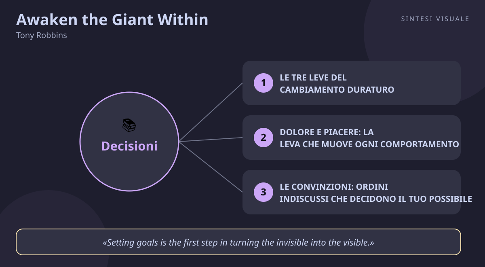

Home / Libri / Awaken the Giant Within

Awaken the Giant Within
Tony Robbins · Successo
«Awaken the Giant Within»
- Alza gli standard
- Dolore e piacere
- Domande potenzianti
- Azione massiccia
🧭Introduzione
- L'autore: Anthony "Tony" Robbins (1960), americano, è il coach motivazionale più famoso del mondo. La sua storia è parte del messaggio: ragazzo povero del Sud California, con una madre alcolista e quattro padri diversi, a 17 anni lascia casa con pochi spiccioli e fa il bidello; a 24 anni tiene già seminari davanti a migliaia di persone. Da allora ha allenato presidenti, campioni dello sport e milioni di partecipanti ai suoi eventi dal vivo come "Date with Destiny".
- Il libro: il secondo di Robbins dopo Unlimited Power (1986), uscito nel 1991 da Simon & Schuster col sottotitolo How to Take Immediate Control of Your Mental, Emotional, Physical and Financial Destiny!. Bestseller del New York Times, milioni di copie vendute, e nel 2026 ne è uscita l'edizione aggiornata del 35° anniversario. In Italia è pubblicato da Bompiani dal 2000 col titolo Come ottenere il meglio da sé e dagli altri.
- Perché conta oggi: perché è il manuale operativo del cambiamento: non ti dice cosa sognare, ti spiega come ricablare il meccanismo che ti fa agire. In un'epoca di buoni propositi che muoiono a febbraio, la sua domanda è brutale e attuale: perché sai cosa fare ma non lo fai?
- A chi è utile: chiunque senta di valere più dei propri risultati — studenti, professionisti, imprenditori, sportivi — e voglia un metodo pratico per alzare davvero l'asticella.
📘Riassunto
- La scintilla centrale: il tuo destino non è deciso dalle circostanze ma dalle tue decisioni, e le decisioni sono guidate da un "sistema operativo" interno (stati d'animo, domande, valori, convinzioni, ricordi) che puoi riprogrammare: cambi il sistema, cambiano le azioni, cambia la vita.
- La struttura (4 parti, 26 capitoli): (1) scatenare il potere — le tre leve del cambiamento duraturo e il principio dolore/piacere; (2) prendere il controllo del sistema maestro — valori, convinzioni, domande, vocabolario, emozioni; (3) i sette giorni per dare forma alla vita — focus su emozioni, corpo, relazioni, soldi e tempo; (4) una lezione sul destino — obiettivi, identità e contributo agli altri.
- Il punto di svolta: il capitolo sul principio dolore/piacere e sulle neuro-associazioni, dove Robbins mostra che non agisci in base a ciò che è giusto, ma in base a ciò a cui hai collegato dolore o piacere: capirlo significa smettere di lottare contro la forza di volontà e iniziare a usare la leva giusta.
- L'eredità oggi: è il libro che ha portato il coaching fuori dalle sale seminari e dentro la cultura popolare — ogni "life coach" su Instagram, ogni corso su abitudini e mindset, discende da qui. Le sue tecniche (ancoraggi, domande potenzianti, standard) sono entrate nel linguaggio della formazione moderna.
💡Concetti chiave
- Il cambiamento duraturo nasce da tre leve: alza gli standard, cambia le convinzioni limitanti, cambia strategia.
- Dolore e piacere muovono tutto: agisci per evitare dolore e cercare piacere, quasi sempre a breve termine.
- Le convinzioni sono ordini indiscussi: ciò che credi possibile decide ciò che tenterai davvero.
- La qualità della tua vita dipende dalla qualità delle tue domande: le domande dirigono il focus.
- Le parole che usi cambiano ciò che provi: un vocabolario povero produce emozioni povere.
- Decidere davvero significa agire: una decisione senza azione non è una decisione, e serve azione massiccia.
📖1. Le tre leve del cambiamento duraturo
- Definizione Robbins sostiene che ogni trasformazione stabile richiede tre mosse in ordine: primo, alzare gli standard — decidere cosa non accetti più e cosa esigi da te d'ora in poi; secondo, cambiare le convinzioni limitanti che ti dicono "non ce la farai"; terzo, cambiare strategia — trovare un metodo migliore, modellando chi c'è già riuscito. Senza la prima leva, le altre due non partono mai.
- Esempio vuoi smettere di fumare per l'ennesima volta. Finché è un desiderio ("dovrei smettere"), fallisci; quando diventa standard ("io non sono una persona che fuma, punto"), butti il pacchetto e non torni indietro. Stesso per lo sport, i soldi, il lavoro.
- Come applicarlo prendi carta e penna e scrivi tre elenchi: cosa non tolleri più nella tua vita, cosa esigi da te d'ora in poi, chi vuoi diventare. Poi per ogni standard scrivi la convinzione che lo sostiene e la prima strategia concreta.
- Errore comune confondere gli standard con gli obiettivi: l'obiettivo è qualcosa che vuoi, lo standard è qualcosa senza cui non accetti di vivere. "Vorrei guadagnare di più" è un obiettivo; "non accetto più di arrivare a fine mese in affanno" è uno standard.
- Collegamento l'identità di Atomic Habits (Clear) — prima cambi chi credi di essere, poi cambia ciò che fai — e la proattività di Covey: tra stimolo e risposta c'è la tua decisione.
📖2. Dolore e piacere: la leva che muove ogni comportamento
- Definizione ogni cosa che fai — o eviti — è guidata da due forze: il desiderio di evitare il dolore e quello di provare piacere. Il cervello crea neuro-associazioni: collega certe azioni al dolore e altre al piacere, e da lì in poi ti guida in automatico. Il problema è che quasi tutti usano questa leva al contrario: collegano dolore alla disciplina (fatica, rinuncia) e piacere alla scorciatoia (divano, dolci, rimandi).
- Esempio sai che dovresti preparare la presentazione, ma il cervello associa "prepararla ora" a fatica immediata e "guardare un video" a sollievo immediato — e scegli il video, anche se domani il dolore sarà dieci volte peggiore. Stesso meccanismo con dieta, soldi, palestra.
- Come applicarlo per un comportamento che vuoi cambiare, scrivi tutto il dolore a lungo termine che ti costerà mantenerlo e tutto il piacere a lungo termine che ti darà cambiarlo; rileggilo finché l'associazione si sposta dal "mi costa" al "mi conviene". Usa scadenze e premi immediati per dare al cervello un piacere a breve termine.
- Errore comune fare affidamento sulla forza di volontà: la volontà si esaurisce, le associazioni restano. Chi si punisce per ogni cedimento rafforza il legame tra cambiamento e sofferenza.
- Collegamento lo sconto iperbolico dell'economia comportamentale (preferiamo 10 euro oggi a 100 tra un anno) e il Sistema 1 di Kahneman: il cervello emotivo vota prima di quello razionale.
📖3. Le convinzioni: ordini indiscussi che decidono il tuo possibile
- Definizione una convinzione è una sensazione di certezza su cosa è possibile, su cosa porta dolore e su cosa porta piacere. Funziona come un comando che il cervello non discute: se credi "non sono portato per i numeri", non proverai davvero a imparare, e il risultato confermerà la convinzione. Sono generalizzazioni del passato, non verità — ma agiscono come verità.
- Esempio due colleghi ricevono lo stesso incarico difficile: uno pensa "non sono all'altezza" e lavora al minimo per non esporsi; l'altro pensa "imparerò facendolo" e chiede aiuto, sbaglia, migliora. Dopo sei mesi il divario è reale — ma è nato da una frase nella testa, non dal talento.
- Come applicarlo individua una convinzione limitante e sfidala con tre domande: "è vera al 100%? Chi l'ha decisa? Cosa mi costa crederci?" Poi sostituiscila con una potenziante e cercale conferme attive (riferimenti): ogni piccolo successo diventa una prova a favore della nuova convinzione.
- Errore comune cercare di cambiare comportamento senza toccare la convinzione sotto: è come potare le foglie lasciando le radici — ricresce tutto.
- Collegamento il mindset di crescita di Carol Dweck (le capacità si allenano) e l'effetto Pigmalione: le aspettative — anche le tue su te stesso — plasmano i risultati.
📖4. Le domande dirigono il focus — e il focus decide la vita
- Definizione il cervello risponde a qualunque domanda gli poni, anche a quelle dannose: chiediti "perché capita sempre a me?" e troverà prove della tua sfortuna. Chiediti "cosa c'è di buono in questa situazione?" e troverà opportunità. La qualità delle domande abituali decide la qualità dell'attenzione, e l'attenzione decide le emozioni e le azioni.
- Esempio dopo un colloquio andato male, "perché sono un fallito?" ti chiude in casa a rimuginare; "cosa ho imparato e cosa farò diversamente al prossimo?" ti fa preparare meglio. Stesso evento, due vite diverse, separati da una domanda.
- Come applicarlo prepara una lista di "domande potenzianti" mattutine (cosa mi rende felice ora? di cosa sono grato? cosa posso dare oggi?) e usale appena sveglio; quando ti sorprendi in un loop negativo, fermati e riformula la domanda al contrario: da "perché non ce la faccio?" a "come posso farcela con ciò che ho?".
- Errore comune credere di "essere realisti" quando ci si pone domande deprimenti: il pessimismo non è lucidità, è solo un focus allenato male.
- Collegamento il reframing della terapia cognitivo-comportamentale e il diario della gratitudine studiato dalla psicologia positiva (Emmons): dove va l'attenzione, va l'energia.
📖5. Il vocabolario trasformazionale: cambia le parole, cambia gli stati d'animo
- Definizione le parole abituali con cui descrivi le tue emozioni ne fissano l'intensità: se ogni contrattempo è "devastante" e ogni attesa è "ansia insopportabile", il corpo reagisce di conseguenza. Robbins propone di abbassare volontariamente l'intensità del lessico negativo ("sono seccato" invece di "sono furioso") e alzare quello positivo ("fantastico" invece di "bene"), perché il cervello prende sul serio le etichette che gli dai.
- Esempio in coda nel traffico, chi sbotta "è un incubo, non ne posso più" arriva al lavoro con le spalle tese e litiga col primo collega; chi dice "è una seccatura, ne approfitto per l'audiolibro" arriva quasi uguale ma intatto. La coda è identica, l'etichetta no.
- Come applicarlo scegli le 3 parole negative che usi di più (stressato, incasinato, stanco morto...) e sostituiscile con versioni più leggere; scegli 3 parole positive e potenziate; usale ad alta voce per una settimana e osserva cosa cambia nel corpo e nelle reazioni.
- Errore comune pensare che sia "fingere positività": non si tratta di negare i fatti, ma di descrivere gli stessi fatti con parole che non ti sabotano — tra "sono distrutto" e "ho bisogno di riposo" c'è la stessa stanchezza ma un'energia diversa per uscirne.
- Collegamento l'etichettamento affettivo studiato da Lieberman (nominare l'emozione la attenua) e il dialogo interno di Feeling Good di Burns: le parole sono maniglie, non specchi.
📖6. Decidere davvero significa agire — con azione massiccia
- Definizione per Robbins la maggior parte delle persone non decide mai davvero: esprime preferenze ("mi piacerebbe", "dovrei", "un giorno..."). Una vera decisione si riconosce da un solo segnale: hai compiuto una nuova azione. E per far attecchire il cambiamento serve "azione massiccia": tentativi numerosi, rapidi, corretti in corsa — perché è l'esperienza a consolidare le nuove neuro-associazioni, non la teoria.
- Esempio "decidere" di imparare l'inglese per tre anni senza mai aprire un libro non è una decisione; iscriversi a un corso, pagare in anticipo e parlare male per tre mesi sì — e solo il secondo caso produce un parlante inglese, per tentativi ed errori.
- Come applicarlo per ogni obiettivo scrivi la prima azione fisica da fare entro 24 ore (telefonata, iscrizione, mail, appuntamento) e falla davvero; poi pianifica volumi, non perfezione: 20 candidature invece della candidatura perfetta, 10 allenamenti invece del programma ideale.
- Errore comune aspettare di sentirsi pronti o motivati prima di agire: la motivazione segue l'azione, non la precede. Chi aspetta il momento giusto aspetta per sempre.
- Collegamento la regola dei 5 secondi di Mel Robbins (agisci prima che il cervello ti fermi) e il "fatto è meglio che perfetto" della cultura startup: la velocità di iterazione batte la qualità del piano.
💬Citazioni da ricordare
"Any time you sincerely want to make a change, the first thing you must do is to raise your standards." — Conta perché è la prima leva di tutto il libro: prima alzi l'asticella di ciò che non accetti più, poi tutto il resto (convinzioni, strategie) può funzionare.
"Setting goals is the first step in turning the invisible into the visible." — Conta perché spiega il potere degli obiettivi scritti: finché un sogno resta nella testa è invisibile, nero su bianco diventa un bersaglio su cui agire.
"A real decision is measured by the fact that you've taken a new action. If there's no action, you haven't truly decided." — Conta perché smaschera le false decisioni: "dovrei", "vorrei" e "un giorno" non contano nulla, conta solo ciò che hai già mosso.
🌍Esempi di oggi
- Il lunedì in palestra che dura fino a giovedì: ogni gennaio paghi l'abbonamento annuale e a febbraio hai smesso: non ti manca la scheda giusta, ti manca lo standard ("io sono uno che si allena tre volte a settimana") e hai collegato dolore all'allenamento e piacere al divano. Inverti le associazioni — piacere subito dopo l'allenamento, costo visibile di ogni salto — e la costanza segue (concetti 1 e 2).
- Il colloquio andato male e le due domande: dopo un "no" a un colloquio, "perché non valgo abbastanza?" ti tiene sul divano per una settimana; "cosa posso migliorare per il prossimo?" ti fa preparare tre risposte migliori entro sera. Stesso rifiuto, due futuri diversi: li separa una domanda (concetto 4).
- La dieta raccontata con parole diverse: dire ogni giorno "sono a dieta, che sacrificio" trasforma ogni pasto in una punizione; dire "ho scelto di mangiare da persona energica" trasforma lo stesso piatto in un'identità. Le calorie sono uguali, la tenuta no — e la tenuta è tutto (concetti 3 e 5).
🛠️Azioni pratiche
- Scrivi i tuoi tre elenchi degli standard: cosa non tolleri più, cosa esigi da te, chi vuoi diventare — e una prima azione entro 24 ore per ciascuno.
- Scegli un'abitudine che rimandi e riscrivi le sue associazioni: elenca 5 dolori a lungo termine del mantenerla e 5 piaceri del cambiarla, poi crea un premio immediato per ogni esecuzione.
- Sostituisci le tue 3 parole negative più usate con versioni più leggere e prepara 3 domande potenzianti da usare ogni mattina per sette giorni.
💎Da portare a casa
Non sei le tue circostanze: sei le tue decisioni — alza gli standard, cambia le domande e agisci, e il gigante si sveglia.
Vuoi scavare più a fondo? Rispondi in chat con il numero del concetto (1–6) che vuoi espandere — standard, dolore e piacere, convinzioni, domande, vocabolario o azione — oppure fai una domanda su successo, vendite, persuasione, negoziazione, stress, emozioni o carriera, e la approfondiamo insieme.
🖼️In un colpo d’occhio

Tocca l’immagine per ingrandirla.